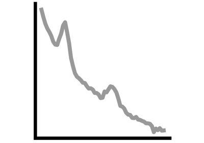
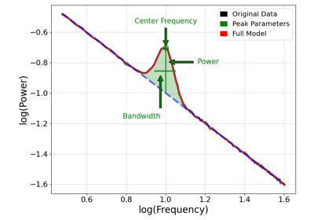
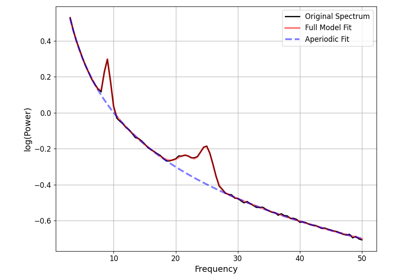
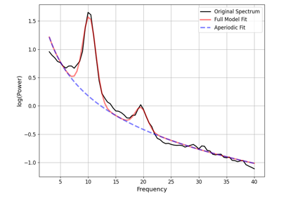
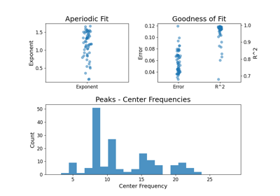

Examples¶
This section has examples of different functionality available in the module.
Examples are organized by topic, and can be explored in any order.
Processing¶
Examples on how to process data related to spectral parameterization.

Managing Objects¶
Examples of how to use, organize, work with, and check FOOOF objects.

Exporting Model Results


Models & Parameters¶
Examples of evaluating and exploring model fits and parameters.



Periodic Parameters
Plotting¶
Examples demonstrating the plot functions.

Plot Power Spectrum Models


Simulations¶
Examples covering simulating neural power spectra.


Analyses¶
Example analyses involving parameterizing neural power spectra.

Developmental Data Demo

Topographical Analyses with MNE
Topographical Analyses with MNE